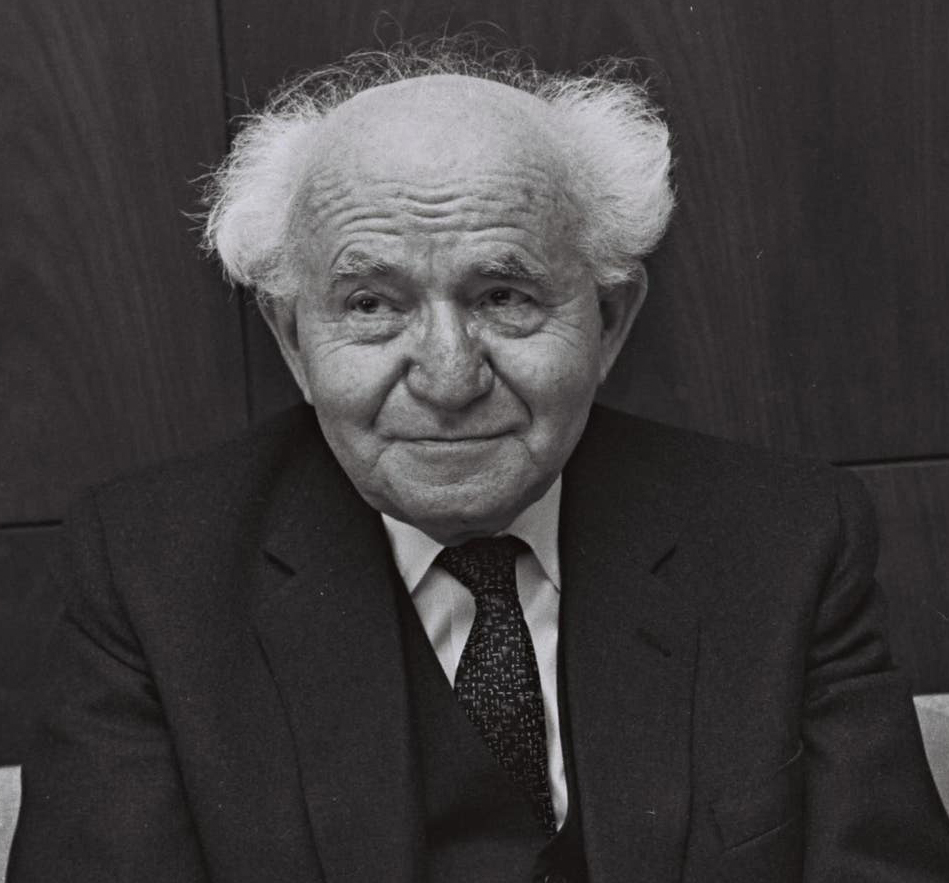
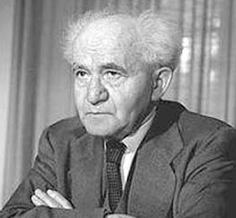
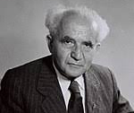

About Me
בן-גוריון היה איש העלייה השנייה, ממנהיגי תנועת העבודה, חבר במפלגות פועלי ציון ואחדות העבודה, מזכירה הכללי הראשון של ההסתדרות הכללית של העובדים בארץ ישראל ומנהיגה הראשון של מפא"י.
בתפקידו כיושב ראש הנהלת הסוכנות היהודית, עמד בראש הנהגת היישוב העברי בארץ ישראל בתקופת המנדט הבריטי, ובתפקידו כיושב ראש מנהלת העם, הכריז ב-1948 על הקמת מדינת ישראל. עם הקמת המדינה, החל לפעול למען הממלכתיות, ובזמן מלחמת העצמאות החליט על פירוק המחתרות וחתם על הפקודה להקמת צה"ל. על מנת לקיים צבא ממלכתי אחד, הורה להפגיז את האונייה אלטלנה ופירק את מטה הפלמ"ח.
הוא הנהיג את מדינת ישראל כראש הממשלה וכשר הביטחון במשך עשור ומחצה עד 1963 (מלבד פסק זמן בן שנתיים, בשנים 1953–1955). בעת כהונתו כראש ממשלה, נחתם הסכם השילומים עם גרמניה, נערך מבצע סיני, הוקם הכור הגרעיני בדימונה ונקלטו מאות-אלפי עולים.
לאחר התפטרותו מראשות הממשלה ופרישתו ממפא"י, הקים ב-1965 את רפ"י. ב-1970 פרש מהחיים הפוליטיים.
My Photos


